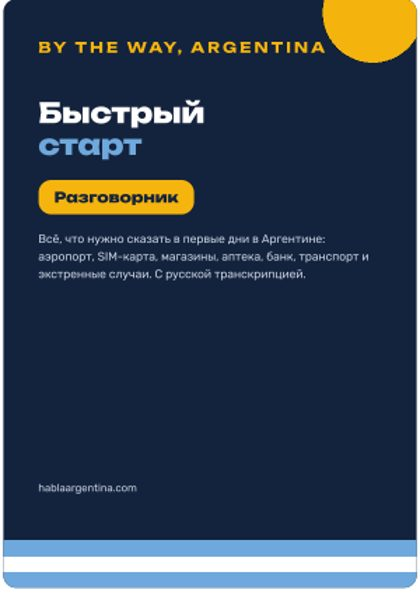
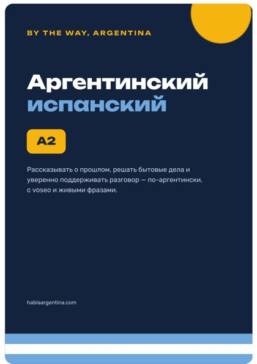

Аргентинский испанский звучит иначе, обращается на «vos» и полон своих слов. Здесь — всё, чтобы понимать его с первых дней: бесплатные уроки, фразы под реальные ситуации, статьи и культурные коды.
Обучение в аргентинском учебном заведении — один из понятных способов получить временное резидентство. Вместе с нашими партнёрами по легализации помогаем пройти весь путь: от выбора программы до документов на жительство. А испанский подтянем параллельно.
Подбор программы и учебного заведения под ваши цели, помощь с поступлением и переписка с учебным заведением.
Языковые программы при учебных заведениях — для тех, кто хочет начать с языка. Подскажем, какие подходят для оформления статуса студента.
Поиск школы, запись и документы для зачисления — и испанский для ребёнка, чтобы было легче адаптироваться.
Что нужно собрать дома: справка о несудимости, свидетельство о рождении, апостиль, перевод у присяжного переводчика (traductor público).
Сопровождение подачи на временное резидентство (residencia temporaria) в миграционную службу Аргентины (Migraciones).
Получение аргентинского ID (DNI для иностранцев), продление статуса и следующие шаги.
Консультации по учёбе и легализации проводят наши партнёры — отвечают в течение 24 часов. Мы не государственный орган: решение о резидентстве принимает миграционная служба Аргентины, а требования к документам время от времени меняются — актуальный список уточняется под ваш случай.
Одна живая фраза в день — и пять вопросов, чтобы проверить, насколько ты уже понимаешь аргентинцев.
На «ты» здесь обращаются через vos, и глаголы меняются: vos sos, vos tenés, vos querés.
Что такое voseo →Авокадо — palta, клубника — frutilla, автобус — colectivo, работа — laburo.
25 местных слов →Миллионы итальянцев переехали сюда в XIX–XX веках, и испанский в Буэнос-Айресе звучит певуче, с жестами.
7 отличий →| По-русски | Аргентина | Испания |
|---|---|---|
| авокадо | palta | aguacate |
| клубника | frutilla | fresa |
| персик | durazno | melocotón |
| машина | auto | coche |
| мобильный | celular | móvil |
| футболка | remera | camiseta |
| квартира | departamento | piso |
| бассейн | pileta | piscina |
Выбери, куда идёшь, — и вот что пригодится. Ударение в транскрипции отмечено знаком над гласной.
Чтобы тебя поняли, мало знать язык — полезно знать, как здесь принято.
Тебе передали калебасу — выпей до дна и верни тому, кто заваривает. «Gracias» здесь значит «мне больше не надо».
Со знакомыми здороваются одним поцелуем в щёку — и женщины, и часто мужчины между собой.
Рестораны оживают к 21–22 часам. Позвать на ужин в шесть вечера — почти как позвать на полдник.
Барбекю на выходных растягивается на полдня. Похвали мясо: «¡Está buenísimo!» — и аплодисменты повару («un aplauso para el asador»).
Не нужно рассказывать, чем занят. Это просто приветствие — отвечай «Todo bien, ¿vos?».
Спросить, за какой клуб человек болеет («¿De qué cuadro sos?»), — отличный способ начать разговор.
Минимум на первые дни: каждый урок — 10 минут, фразы с транскрипцией, совет и короткий тест. Прогресс сохраняется.
Приветствие, знакомство, вежливые фразы. С карточками, играми и диалогами — прямо в браузере телефона, без установки.
PDF-учебники A1–B2 с русской транскрипцией, грамматикой и упражнениями с ответами. Скачай, распечатай и занимайся дома — как распечатать в Аргентине. Подробнее об учебниках →

16 страниц самого нужного на первые дни: аэропорт, SIM-карта, магазины, канцелярия, аптека, банк, транспорт и экстренные случаи.
Купить PDF · 390 ₽ (≈ $5)Чтение и произношение, знакомство, магазин, кафе, транспорт, аптека, жильё.

Прошедшие времена, работа, врач, банк и документы, покупки, советы.
Приложение с уроками, диалогами, карточками и повторением ошибок. Разовая оплата, без подписки — доступ остаётся навсегда, включая новые уроки.
Бытовые ситуации первых недель: магазины, кафе, аптека, транспорт, деньги, экстренные случаи.
Грамматика и voseo по порядку: чтобы не только повторять готовые фразы, но и строить свои.
Прошедшие времена, местоимения и обороты — чтобы рассказывать о себе и поддерживать разговор.
Все три курса вместе — 3489 ₽. Оплата картой или через СБП в Telegram-боте.
Я сам приехал в Аргентину и в первую же неделю понял, что мой «испанский из приложения» здесь почти не работает: другое произношение, другие слова, другие ситуации. Всё, что реально пригодилось, я собрал здесь — чтобы тебе было проще, чем было мне.
Да. Всё начинается с правил чтения, а каждая фраза дана с русской транскрипцией. Начни с бесплатного мини-курса — он рассчитан на ноль.
Обычные курсы учат «универсальному» испанскому. Здесь — только аргентинский вариант: voseo, «ш», местные слова и ситуации, в которые ты попадёшь в Аргентине.
Мини-курс из 5 уроков, фразу дня, разговорник по ситуациям на сайте и все статьи, а также первые 3 урока приложения. Без регистрации.
Да, для студентов признанных учебных заведений есть временное резидентство. Условия и список документов зависят от вашей ситуации и программы — напишите специалисту по ВНЖ, он разберёт ваш случай.
Зависит от программы: для многих нужен испанский, а языковые курсы можно начать и с нуля. Пока готовятся документы, удобно подтянуть язык — начните с бесплатного мини-курса.
Нет. Разовая оплата, доступ навсегда, новые уроки добавляются бесплатно.
В браузере на телефоне, планшете или компьютере — ничего не нужно устанавливать.